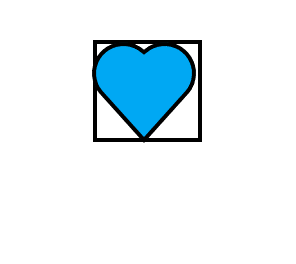

ABAIXO VOCE VAI VER AS IMAGENS DENTRO DA PASTA DE SERVICO
Neste exemplo vamos inserir imagens no nosso site usando imagem que está na pasta principal, numa subpasta ou atravez dum link em varios formatos mas para o nosso caso vamos testando com formatos jpg e png

podemos tambem carregar imagens que estao em subpastas
tambem podemos carregar imagens externas
para isto temos que colocar no lugar de src entre aspas o link da imagem externa